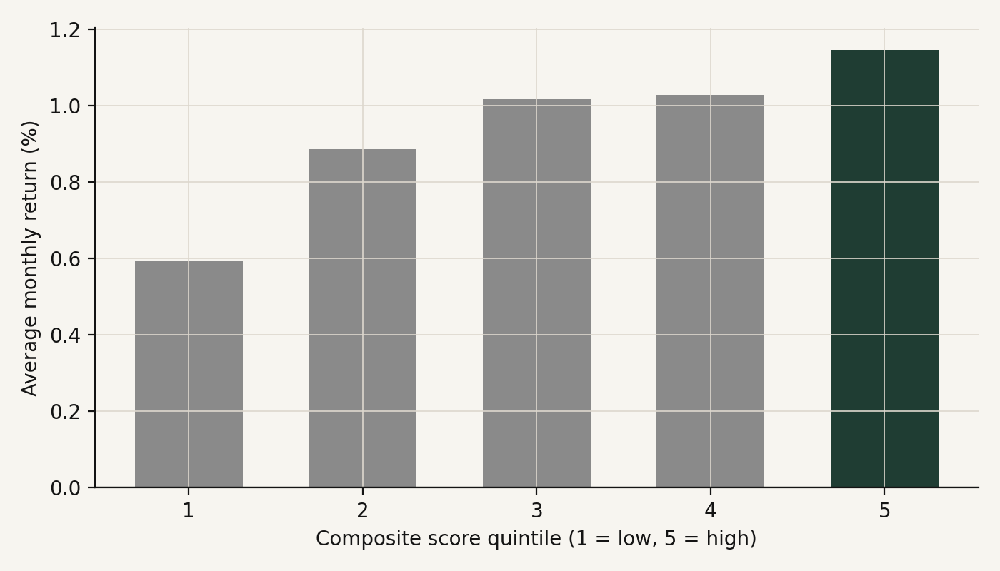
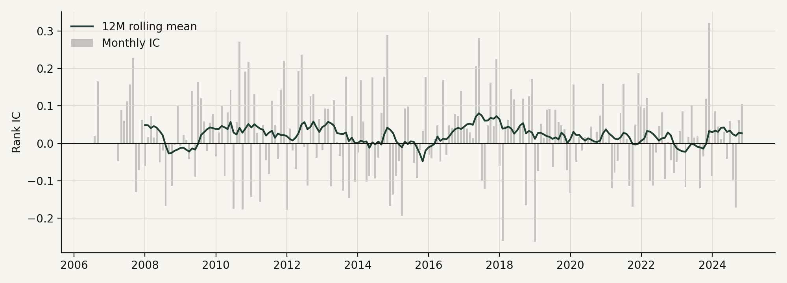

多因子量化策略
Multi-Factor Equity Strategy
我把“买便宜的好公司”拆成了三个可以排序的因子。
01 / Question跨板块的 PE 不可比，能不能在板块内部排序？
银行的 8 倍 PE 和科技的 50 倍 PE，放在一张表里没有意义。这个项目想做的，是在同一板块内，用价值、成长、质量三个维度给股票排序，再把它们合成一个分数。
课程版的报告写的是年化 40.23%。重跑时我先问了一个更基本的问题：把基准换成全市场、把成本算全，这个超额还在吗？
02 / Data718,305 条月度观测，2005–2024
数据来自课程提供的 A 股月频表：个股月回报率、每股指标、成长能力、总市值。财务数据是季度频率，2005-03 至 2023-12。
- EPS 是年初至今累计值，先还原成 TTM，再计算 PE。
- 财报不是期末就可见：按法定披露截止日设置可用日，避免前视偏差。
- 每月末取最近一期已经可见的财报，用 merge_asof(backward) 对齐。
数据限制：价格是前复权收盘价，EPS 是名义值；两者相除的 PE 水平可能有偏。这一点无法在现有数据内完全修正，只能写进局限。
03 / Method三个因子，一套成本口径
价值用 PE，成长用归母净利润增长率，质量用总负债增长率。每月在可选池内做横截面百分位排序，按 40/40/20 加权。分数越高，越靠前。
# percentile ranks within each month, eligible names only df["s_value"] = g["PE"].rank(pct=True, ascending=False) df["s_growth"] = g["Niapcrt"].rank(pct=True, ascending=True) df["s_quality"] = g["Lbrt"].rank(pct=True, ascending=False) df["score"] = 0.4*s_value + 0.4*s_growth + 0.2*s_quality
- 可选池：PE 在 (0, 300)、三项因子非缺失、至少 6 个月交易历史、剔除当月市值最低 30%。
- 组合：全市场前 10%，最多 150 只，等权，月度调仓。
- 成本：按换手率计算，佣金 0.03% + 滑点 0.10% + 印花税（2023-08 前 0.10%，后 0.05%），仅卖出收印花税。
- 基准：全市场等权；市值加权作为稳健性检验。
04 / Result年化 8.06%，超额很薄
| 区间 | 策略（净） | 全市场等权 | 市值加权 | vs 等权 |
|---|---|---|---|---|
| 全样本 2005–2024 | 8.06% | 7.19% | 4.81% | +0.87% |
| 样本内 2005–2018 | 7.52% | 5.79% | 3.11% | +1.72% |
| 样本外 2019–2024 | 9.15% | 10.05% | 8.31% | −0.90% |
IC 均值 0.022，ICIR 0.206，t 值 3.01；五分组月均收益从 Q1 的 0.59% 单调升到 Q5 的 1.15%。月均换手 19.9%，平均持仓 81 只。

Rebuild note
课程版报告写的是 40.23%。这个数字来自一个基准错误：代码把“组合内股票的等权平均”当成了市场基准，成本只计 0.03% 佣金，绩效指标用的是税前收益，EPS 也没有还原成 TTM。
重跑后是 8.06%。这不是失败——它说明这个策略更接近“质量+价值的结构性倾斜”，而不是稳定的 alpha。完整对照在代码仓库的 README 里。


05 / Limitation四个没有解决的口径问题
- 价格口径。前复权收盘价与名义 EPS 相除，PE 水平可能有偏；没有未复权价格，无法完全修正。
- 行业。数据没有行业分类，只能用上市板块（主板/中小板/创业板/科创板）代替。
- 退市。没有退市收益；下月收益缺失的股票被排除，可能低估尾部损失。
- ST 与幸存者偏差。没有股票名称，无法剔除 ST；数据是否包含已退市股票无法确认。
06 / Next如果再做一次
- 换中证全指或真实行业指数做基准，补真实行业分类。
- 做因子正交化与行业中性，看价值、成长、质量各自还剩多少。
- 补退市收益、剔除 ST，重估尾部风险。
- 做换手成本敏感性与容量分析，回答“这个策略能装多少钱”。